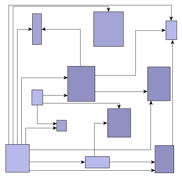

| Polyline Edge Routing | ||
|---|---|---|
| Prev | Chapter 5. Automatic Graph Layout | Next |
This section presents polyline edge routing.
Polyline edge routing calculates polyline edge paths for a diagram's edges. The positions of the nodes in the diagram are not altered by this algorithm.
Edges can be routed orthogonally, i.e., each edge path consists of horizontal and vertical segments, or octilinear. Octilinear means that the slope of each segment of an edge path is a multiple of 45 degree.
Figure 5.103. Polyline edge routing styles
|

|
 |
| Graph with orthogonal edge routing... | ... and with octilinear edge routing. |
Table 5.70, “Relevant classes for this algorithm” lists the relevant classes for the polyline edge routing algorithm.
Table 5.70. Relevant classes for this algorithm
| Classname | Description |
|---|---|
| EdgeRouter |
Main algorithm. See the description below. |
| EdgeLayoutDescriptor |
Provides edge-related layout options. For example, configuration of minimum distances and penalty settings. See Related Classes. |
| PenaltySettings |
Configures penalty settings that will be queried during the edge routing process. See Related Classes. |
| Grid |
Provides grid settings. |
Class EdgeRouter is a layout
algorithm for routing edges in a diagram.
The positions of the nodes in a diagram are not altered by this algorithm.
The algorithm supports routing of all edges at once as well as incremental scenarios
where subsequently added edges should be drawn to fit the existing diagram.
It can be used to route edges in both flat and grouped graphs.
is a layout
algorithm for routing edges in a diagram.
The positions of the nodes in a diagram are not altered by this algorithm.
The algorithm supports routing of all edges at once as well as incremental scenarios
where subsequently added edges should be drawn to fit the existing diagram.
It can be used to route edges in both flat and grouped graphs.
EdgeRouter provides a set of options that affect the routing behavior. This section highlights some of the configuration options available.
The setSphereOfAction(byte) method determines the (sub-)set of edges that the router should process.
When only a subset should be routed, a data provider holding the subset information
for each edge is looked up.
The data provider is expected to be registered with the graph using the look-up
key returned by getSelectedEdgesDpKey()
method determines the (sub-)set of edges that the router should process.
When only a subset should be routed, a data provider holding the subset information
for each edge is looked up.
The data provider is expected to be registered with the graph using the look-up
key returned by getSelectedEdgesDpKey() .
.
ROUTE_ALL_EDGES |
|
| Description | Routes all edges in the graph. |
ROUTE_SELECTED_EDGES |
|
| Description | Routes only the selected subset of edges in the graph. |
| Polyline Edge Routing | |
| API | void setPolylineRoutingEnabled(boolean polylineRoutingEnabled) |
| Description | Determines whether the edge routing algorithm creates orthogonal or octilinear edge paths. |
| Preferred Polyline Edge Segment Length | |
| API | void setPreferredPolylineSegmentLength(double preferredPolylineSegmentLength) |
| Description | Sets the preferred length of (non-orthogonal) polyline segments. |
| Minimal Node to Edge Distance | |
| API | void setMinimalNodeToEdgeDistance(double minimalNodeToEdgeDistance) |
| Description | Determines the distance between edge segments and node sides. |
Further routing options can be specified by means of the layout descriptor class for edges. One instance of this class is held by EdgeRouter to store and retrieve default values for routing options, like, e.g., preferred minimum distances between graph elements.
EdgeRouter provides access to the default EdgeLayoutDescriptor instance:
instance:
EdgeLayoutDescriptor getDefaultEdgeLayoutDescriptor() |
|
| Description | Edge-related layout options |
In addition to the instance held directly by EdgeRouter, layout descriptors can also be associated with single edges in order to specify individual settings for them. Setting individual descriptors for edges is done through a data provider that is bound to the graph. See Related Classes.
Class EdgeRouter supports:
The polyline edge routing algorithm can be set up to take both node labels and edge labels into account during routing. It considers the size of node labels and labels of "fixed" edges, i.e., edges that are not to be routed. If space permits, the algorithm will generate edge paths that do not not cross through these labels in the resulting diagram.
| Consider Node Labels | |
| API | void setConsiderNodeLabelsEnabled(boolean enabled) |
| Description | Specifies whether or not this edge router considers node labels as obstacles for edge paths it calculates. |
| Consider Edge Labels | |
| API | void setConsiderEdgeLabelsEnabled(boolean enabled) |
| Description | Specifies whether or not labels of edges that are not to be routed by the edge router are considered as obstacles for the edge paths it calculates. |
EdgeRouter supports both weak port constraints as well as strong port constraints that are specified for the edges of a graph (more precisely, the edge ends). The setup of port constraints is presented in the section called “Port Constraints”.
Using weak port constraints for the ends of an edge, it is possible to specify at which side of the source node or target node, respectively, an edge path must connect.
Using strong port constraints, it is possible to specify the side of the node at which an edge must connect, and additionally also the exact position of the port.
Both weak port constraints and strong port constraints can be mixed easily in the drawing.
The following table lists the data provider look-up keys that are recognized by EdgeRouter in conjunction with port constraints.
Table 5.71. Data provider look-up keys
| Key | Element Type | Value Type | Description |
|---|---|---|---|
| SOURCE_PORT_CONSTRAINT_KEY |
Edge | PortConstraint | For each edge a PortConstraint object encoding its source end's port constraint. |
| TARGET_PORT_CONSTRAINT_KEY |
Edge | PortConstraint | For each edge a PortConstraint object encoding its target end's port constraint. |
In addition to the support provided for port constraints, polyline edge routing also supports the concept of port candidates. Both aspects, i.e., matching port candidates as well as modeling enhanced port constraints are supported.
For the matching of port candidates, the set of allowed anchor locations for
edge ends at the nodes of a graph are retrieved from a data provider that is
bound to the graph using the look-up key
NODE_DP_KEY .
The subset of desired anchor locations where the source ports and target ports
of edges like to connect to are retrieved from data providers that are bound to
the graph using the look-up keys
SOURCE_PCLIST_DPKEY
.
The subset of desired anchor locations where the source ports and target ports
of edges like to connect to are retrieved from data providers that are bound to
the graph using the look-up keys
SOURCE_PCLIST_DPKEY and
TARGET_PCLIST_DPKEY
and
TARGET_PCLIST_DPKEY ,
respectively.
,
respectively.
See the section called “Port Candidates” for a detailed description of the port candidates concept.
For modeling enhanced port constraints, the set of possible port candidates for
the edges of a graph are retrieved from data providers that are bound to the
graph using the look-up keys
SOURCE_PCLIST_DPKEY and
TARGET_PCLIST_DPKEY
and
TARGET_PCLIST_DPKEY ,
respectively.
,
respectively.
The following table lists the data provider look-up keys that are recognized by EdgeRouter in conjunction with port candidates.
Table 5.72. Data provider look-up keys
| Key | Element Type | Value Type | Description |
|---|---|---|---|
| NODE_DP_KEY |
Node | PortCandidateSet | For each node a PortCandidateSet object encoding the set of allowed anchor locations for edges. |
| SOURCE_PCLIST_DPKEY |
Edge | Collection | For each edge a java.util.Collection of PortCandidate objects that encode the subset of desired anchor locations where the source port likes to connect to. |
| TARGET_PCLIST_DPKEY |
Edge | Collection | For each edge a java.util.Collection of PortCandidate objects that encode the subset of desired anchor locations where the target port likes to connect to. |
Polyline edge routing supports the notion of grouping together multiple edge ends to be anchored at the same location. This can be specified for both source ends and target ends. The general setup for edge groups is described in the section called “Edge/Port Grouping (Bus-Style Edge Routing)”.
The following table lists the data provider look-up keys that are recognized by EdgeRouter in conjunction with edge/port grouping (bus-style edge routing).
Table 5.73. Data provider look-up keys
| Key | Element Type | Value Type | Description |
|---|---|---|---|
| SOURCE_GROUPID_KEY |
Edge | Object | For each edge an arbitrary Object indicating the group its source end is affiliated with. |
| TARGET_GROUPID_KEY |
Edge | Object | For each edge an arbitrary Object indicating the group its target end is affiliated with. |
EdgeRouter by default supports node halos as soon as they are declared. It considers any specified additional paddings around nodes and if space permits, the algorithm will generate edge paths that do not cross through these areas in the resulting diagram. Other constraints (e.g. port constraints) that have higher costs associated, can cause edges to cross node halos, however.
The following table lists the data provider look-up keys that are recognized by EdgeRouter in conjunction with node halo support.
Table 5.74. Data provider look-up keys
| Key | Element Type | Value Type | Description |
|---|---|---|---|
| NODE_HALO_DPKEY |
Node | NodeHalo |
A NodeHalo |
EdgeRouter supports routing in grouped graphs without further setup. It recognizes group nodes and folder nodes and finds edge paths to nodes grouped within group nodes.
EdgeRouter supports routing in partition grids without further setup. It recognizes swimlane nodes/partition grids and finds edge paths to nodes within partition cells.
To know about the layout of a partition grid's rows and columns, it uses the services
of class PartitionGrid .
The PartitionGrid object is retrieved from a data provider that is bound to the
graph using the look-up key PARTITION_GRID_DPKEY
.
The PartitionGrid object is retrieved from a data provider that is bound to the
graph using the look-up key PARTITION_GRID_DPKEY .
.
The following table lists the data provider look-up keys that are recognized by EdgeRouter in conjunction with routing in partition grids.
Table 5.75. Data provider look-up keys
| Key | Element Type | Value Type | Description |
|---|---|---|---|
| PARTITION_GRID_DPKEY |
Graph | PartitionGrid |
A PartitionGrid |
EdgeRouter supports incremental routing through the "Sphere of Action" feature. See the above description.
Class EdgeLayoutDescriptor can be used to configure edge-related layout and drawing options.
For example, the following options can be set:
can be used to configure edge-related layout and drawing options.
For example, the following options can be set:
The edge layout can be configured using class
EdgeLayoutDescriptor :
:
| Minimum Distance Edge to Edge | |
| API | void setMinimalEdgeToEdgeDistance(double distance) |
| Description | Determines the preferred minimum distance between any two edge segments. |
| Minimum Length of First and Last Segment | |
| API | void setMinimalFirstSegmentLength(double length) |
| Description | Determine the preferred minimum length of the first (at the source) and last (at the target) edge segment. |
| Minimum Distance to Node Corners | |
| API | void setMinimalNodeCornerDistance(double distance) |
| Description | Determines the preferred minimum distance between an incident edge and the corners of its node at the side where the edge connects. |
| Penalty Settings | |
| API | void setPenaltySettings(PenaltySettings penaltySettings) |
| Description | Configures different penalty settings that are queried during edge routing. Penalties define the costs for various situations, like, e.g., two edge paths crossing, or an edge path crossing a node, etc. Higher penalty for a specific situation means that the edge routing algorithm tries to avoid it and instead looks for other edge paths. |
An EdgeLayoutDescriptor instance can be specified individually for single edges
by means of a data provider that is bound to the graph.
The data provider is expected to be registered with the graph using key
EDGE_LAYOUT_DESCRIPTOR_DPKEY .
In the absence of an individual descriptor for an edge, the default EdgeLayoutDescriptor
instance that is registered with EdgeRouter will be used.
.
In the absence of an individual descriptor for an edge, the default EdgeLayoutDescriptor
instance that is registered with EdgeRouter will be used.
EdgeRouter supports edge routing such that the generated paths obey so-called monotonic path restrictions. This means that (ideally) each vertical and/or each horizontal segment of an edge path is directed the same way, namely from source node to target node. Thus, when following the edge path, there is never a "turning back" towards the source node, but instead a steady movement towards the target node.
Monotonic edge paths are useful, for example, when routing edges in UML class diagrams/inheritance diagrams or in a tree-like organization chart.
The following method from class EdgeLayoutDescriptor configures monotonic path generation:
| Monotonic Path Restrictions | |
| API | void setMonotonicPathRestriction(byte monotonicPathRestriction) |
| Description |
Specifies the kind of monotonic path restrictions for edges. The following restrictions are available:
|
Figure 5.105, “Edge routing with monotonic path restrictions” illustrates the results of specifying monotonic edge path restrictions. All figures have specified restrictions in vertical direction, i.e., each vertical edge segment shall be directed from source node to target node.
The following table lists the data provider look-up keys that are recognized by EdgeRouter in conjunction with individual layout settings for edges.
Table 5.76. Data provider look-up keys
| Key | Element Type | Value Type | Description |
|---|---|---|---|
| EDGE_LAYOUT_DESCRIPTOR_DPKEY |
Edge | EdgeLayoutDescriptor |
For each edge an EdgeLayoutDescriptor |
Tutorial demo application OctilinearEdgeRouterDemo.java presents polyline edge routing. The following yFiles source code demo programs also demonstrate polyline edge routing:
Layout module PolylineEdgeRouterModule.java shows configuration aspects of polyline edge routing and can also be used to interactively explore the effects of different settings.
Class EdgeRouter knows a number of data provider keys which are used to retrieve supplemental layout data for each graph element. The data is bound to the graph by means of a data provider which is registered using a given look-up key. Table 5.77, “Data provider look-up keys” lists all look-up keys that EdgeRouter tests during the layout process in order to query supplemental data.
Binding supplemental layout data to a graph is described in the section called “Providing Supplemental Layout Data”.
Table 5.77. Data provider look-up keys
| Key | Element Type | Value Type | Description |
|---|---|---|---|
| EDGE_LAYOUT_DESCRIPTOR_DPKEY |
Edge | EdgeLayoutDescriptor |
For each edge an EdgeLayoutDescriptor |
| SOURCE_PORT_CONSTRAINT_KEY |
Edge | PortConstraint | For each edge a PortConstraint object encoding its source end's port constraint. |
| TARGET_PORT_CONSTRAINT_KEY |
Edge | PortConstraint | For each edge a PortConstraint object encoding its target end's port constraint. |
| SOURCE_GROUPID_KEY |
Edge | Object | For each edge an arbitrary Object indicating the group its source end is affiliated with. |
| TARGET_GROUPID_KEY |
Edge | Object | For each edge an arbitrary Object indicating the group its target end is affiliated with. |
| NODE_DP_KEY |
Node | PortCandidateSet | For each node a PortCandidateSet object encoding the set of allowed anchor locations for bus connections. |
| SOURCE_PCLIST_DPKEY |
Edge | Collection | For each edge a java.util.Collection of PortCandidate objects that encode the subset of desired anchor locations where the source port likes to connect to. |
| TARGET_PCLIST_DPKEY |
Edge | Collection | For each edge a java.util.Collection of PortCandidate objects that encode the subset of desired anchor locations where the target port likes to connect to. |
| PARTITION_GRID_DPKEY |
Graph | PartitionGrid |
A PartitionGrid |
| NODE_HALO_DPKEY |
Node | NodeHalo |
A NodeHalo |
| ABORT_HANDLER_DPKEY |
Graph | AbortHandler |
An AbortHandler |
|
Copyright ©2004-2015, yWorks GmbH. All rights reserved. |